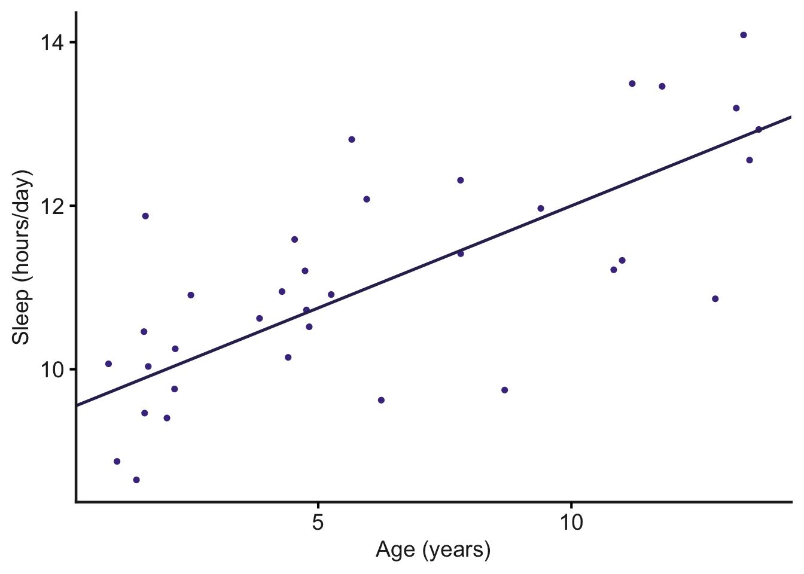
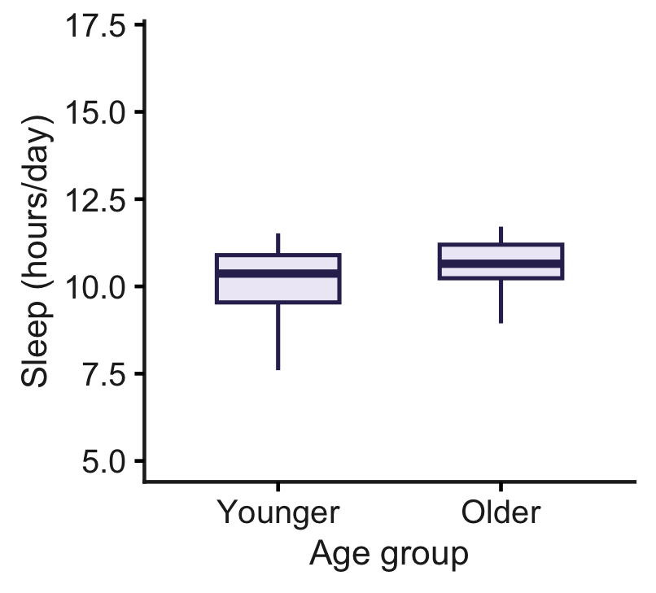
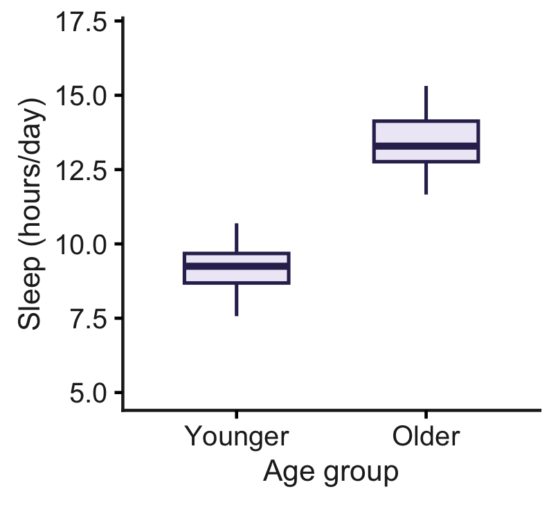
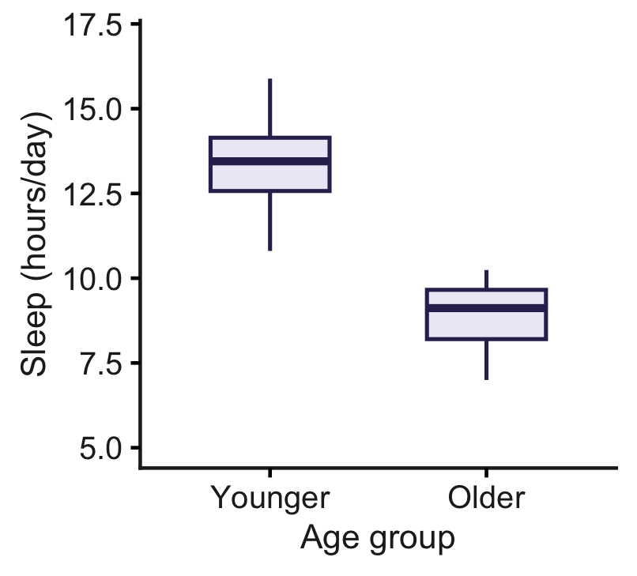
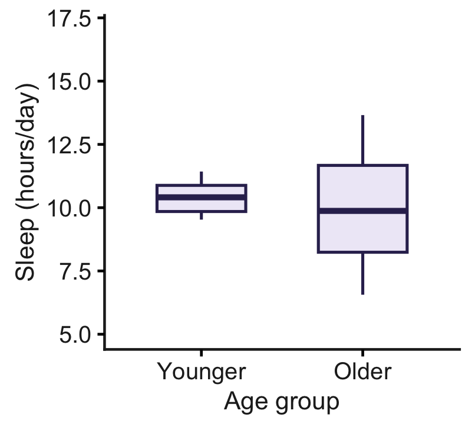

Week 1: Getting started
Biology Experimental Design and Analysis (BEDA)
Introduction
Welcome to your first BEDA practical. Imagine that this is the first day of your new job. A decent workplace environment would see you being introduced to the people, the tools and the resources you will use for your job. Maybe you have done it before, but there is always something new. This practical is that introduction.
This week, you will get familiar with the tools and approaches you will use throughout the semester. You will also have time to explore the software and support resources before completing your first modelling task, which is to communicate your ideas using a model, even when you do not yet have a statistical model to fit.
Before the practical
- Attend or watch the Week 1, Tuesday lecture.
- Read through this practical before class. You will have a better experience if you are familiar with the tasks. You do not need to complete anything in advance, but reading ahead will help you plan your time and know what to expect.
- Bring a laptop. If possible, install your chosen software and the required modules or packages before the practical. If setup is not finished when class begins, work with a partner while the downloads continue.
- Bring a pen or pencil for your lab notebook. You will use it to sketch ideas, annotate figures, and quickly record decisions during activities.
Note: Please avoid asking AI to summarise this practical before you have read it yourself. You need to develop critical reasoning skills, which often requires engaging directly with the material and tasks. It takes about 5 minutes to read, and doing so will help you understand what you do (and do not) know so that you can ask for the right help during the practical.
NoteDownload the Week 1 datasets
Download both files before you begin and keep their filenames unchanged:
If the links do not work, you can also download the files from Canvas - Module Content and Resources.
Learning outcomes
By the end of this practical, you should be able to:
| Learning outcome | How you will practise it |
|---|---|
| Formulate a measurable biological question from observations or available data. | Turn observations about penguins into questions, then formulate your own question using variables from another dataset on possums. |
| Distinguish response and predictor variables and classify them by data type. | Classify variables, form biologically meaningful pairs and identify what you want to explain and what might explain it. |
| Explain how decisions made during study design shape the models that can be used. | Compare age recorded as categories with age measured continuously, then consider how measuring or classifying your own variables differently would change the model. |
| Use a graphical model to communicate an expected biological relationship before analysing data. | Choose and justify an appropriate plot, label both axes and sketch a plausible relationship in your lab notebook. |
1 Workshop
We will begin with a short workshop to help you get started.
1.1 Pick your software (15 min)
If you are new to statistical software, please choose Jamovi. Demonstrators with expertise in R and SPSS will also be available, although we recommend Jamovi if you would otherwise choose SPSS.
The 15-minute setup period is for choosing and checking your software route. A new installation may take longer, so work with a partner if your downloads are still running.
Note: If you use other software, we assume that you are already familiar with it and can complete the practical tasks independently.
- Go to the Jamovi download page.
- Download the current Desktop version for your operating system.
- Open the downloaded installer and follow the prompts. On macOS, open the
.dmgfile and move Jamovi to your Applications folder. - Open Jamovi.
- Click the + icon in the top-right corner and select jamovi library.
- Select Available, then install GAMLj3, vijPlots and flexplot.
R and RStudio are separate programs. Install R first, then install RStudio.
- Download R for Windows or macOS. On a Mac, choose the installer that matches Apple silicon or Intel.
- Open the R installer and accept the default options.
- Download the free version of RStudio Desktop for your operating system.
- If you cannot install RStudio, you can use Posit Cloud in a web browser or install Positron instead.
R and Positron are separate programs. Install R first, then install Positron.
- Download and install R for Windows or macOS. Positron requires R 4.2 or later.
- Go to the Positron download page.
- Choose the installer for your computer. On a Snapdragon-based Windows 11 laptop, choose Windows arm64. If you do not have administrator access, choose the Windows user-level installer.
- Install and open Positron. If prompted, select the R installation you just installed.
1.2 A simple modelling exercise (10 min)
What is in a question? When we see an interesting pattern and want to investigate it, we need to be able to ask questions that can be addressed with data. Let’s start with a familiar example.

The above are simple illustrations of the three penguin species in the penguins.csv dataset. Suppose we were, in fact, scientists on a research expedition to the Palmer Archipelago of Antarctica, and we saw these cartoon penguins. They’re not moving, all we see are their shapes and sizes, and we happen to observe that there are at least three species. What interesting observations might we make about them? How could we turn those observations into a question that can be addressed with data?

To be able to recognise data that we can measure, we need to be able to identify the response and predictor variables in a question. What is a response variable? What is a predictor variable? It will be ideal for you to write down your definitions in your lab notebook as these terms will be used throughout the semester.
We will now open the penguins.csv dataset and talk through variables, data types, relationships and formulating questions. To do this, we have to pretend that we are biologists who have just observed these penguins in the wild and have an idea of the possible variables that might be important to measure. We will then formulate a question and sketch a model to represent the relationship we expect to see. No software is needed!
1.3 Introduction to cheatsheets (5 min)
In the final part of the workshop, we will introduce cheatsheets, which are quick reference guides that we have developed to guide you through the software. We hope that this makes the purpose of BEDA clear: software should be the least of your worries.
2 Practical
You will now work in pairs to complete the practical exercises. Your demonstrators will roam the room and check in with you to see how you are going. If you have any questions, please ask them! Demonstrators will check each of your exercises to ensure that you are on the right track.
2.1 Exercise: Cheatsheets
This exercise is designed to get you familiar with the cheatsheets and how to use them. You will be asked to complete a few cheatsheets that are based on Jamovi or R. Please do not attempt other cheatsheets for now - we want to make sure you are familiar with the software today and catch technical issues early.
Task 1
- Open Cheatsheets.
- Choose two cheatsheets that you have not used before and see if you can create the outputs they describe.
- Save those outputs. A demonstrator will check your work and give you feedback.
Note: If you have never used Jamovi before, now is a good time to try it.
2.2 Exercise: Data types
In this exercise you will work on the possums.xlsx dataset. If you have not already downloaded it, do that now and open it in your chosen software.
Task 2
- Carefully read the “Metadata” and “AllPossData” sheets in the MS Excel file. The metadata sheet describes the variables in the dataset and their units of measurement. The AllPossData sheet contains the actual data.
- Choose six variables, including at least two continuous variables and two categorical variables. Classify each variable and record its type in your lab notebook. Some variables may have more than one reasonable classification.
- Use those variables to identify two biologically meaningful pairs: one containing a continuous and a categorical variable, and another containing two continuous variables. You will choose one of these pairs for Task 3.
Note: The same underlying trait can be recorded in different ways. For example, exact age can be treated as continuous, whereas age classes such as young, adult and old are ordinal. Binary variables are also categorical variables with exactly two levels. If you are unsure about a classification, ask a demonstrator. Data classification is a key step in the modelling process.
Data types
| Data type | What it means |
|---|---|
| Continuous | A numeric measurement that can take many values |
| Discrete | A numeric count with whole-number values |
| Categorical (nominal) | A label or group with no natural order |
| Ordinal | A category with a meaningful order |
| Binary | A categorical variable with two levels |
2.3 Exercise: Modelling basics
In this exercise you will use variables from the possums.xlsx dataset to formulate one biological question and develop one graphical model. You will choose an appropriate plot and sketch the relationship you expect to see; you do not need to analyse the data in software.
What is the point? A model is just a simple way to represent something complicated. In data analysis, a model helps us make sense of a dataset, test ideas (hypotheses), or make predictions. Models can be as simple or as fancy as you like, depending on your data and your research question.
Soon, you will start using empirical models to describe relationships between variables. We will write these relationships using simple notation, such as \(y \sim x\). We won’t do that just yet; for now, we will plot the data.
If you can plot it, you are already modelling it
For now, let us focus on graphical models – in other words, plots! Plots are models because they show relationships between variables.
For example, you could plot the daily sleep time of dogs against their age to see if there is a pattern. At this stage, more than one pattern may be biologically plausible. The important thing is to make your expectation explicit and be able to explain it. Younger and older dogs might sleep for similar amounts of time, or one group might sleep longer than the other. These possibilities could look like this:




Each plot represents a different possible relationship, but they all use the same response and predictor variables. The response is daily sleep time in hours, and the predictor is age group (younger or older)—a categorical variable.
Interestingly, how we consider our variables can drastically change the type of plot and model used for data analysis. For example, consider the same relationship as above, but while planning the study, we decide to record the exact age of each dog in years. Now, age is a continuous variable, and we can use a scatterplot to show how daily sleep time changes across the age range:
In the scatterplot, the exact ages are retained, making it easier to see how daily sleep time changes across the age range. The boxplots and scatterplot use the same response and predictor, but treating age as categorical or continuous changes what the plot shows and how we interpret the relationship.
Task 3
Your goal is to practise thinking like a research biologist. Complete all five steps below for one biological question and one graphical model. You do not need to process or analyse the data. Knowing the variable types is enough to choose and sketch an appropriate plot.
Choose a variable pair. Return to the two pairs you identified in Task 2 and choose one for this task.
Formulate a research question. Choose variables that could address a simple biological question. Identify the response variable, the predictor variable and the type of each variable.
Choose a plot. Match the plot to your question and variable types:
- Scatterplot: Shows the relationship between two continuous variables.
- Boxplot: Compares a continuous response across the groups of a categorical predictor.
Sketch your graphical model. In your lab notebook, write your research question and draw the plot you expect to see. Label both axes and show a plausible pattern. The sketch represents your idea; it does not need to match the data.
Explain your model. State the relationship in words and explain why the plot suits your variables. Consider whether a different way of measuring or classifying one variable would change the plot you use. Discuss your reasoning with your partner or demonstrator.
Your lab notebook should contain:
- your biological question;
- the response and predictor variables, including their types;
- a labelled sketch of the plot;
- the expected relationship stated in words; and
- a brief explanation of why the plot is suitable.
You do not need to fit or test a statistical model.
3 End of practical notes
3.1 Help us collect lots of snails!
We need about 400 common garden snails for the Module 2 plant-herbivore projects! Lots of prizes in gift cards to be won. See the snail competition page for details. We have prepared up to 17 prizes for this competition, so check out the Canvas page out and help us.
If you are interested, please collect the following from the lab before you leave:
- A food container
- A pair of gloves (latex or nitrile)
Taking part is optional and has no effect on your marks.
3.2 That is a wrap
That’s it for today! If you have any questions, ask your demonstrators who are happy to help. If there is time, we will do a 10-minute Q&A session before showing the attendance QR code. Make sure to take attendance before you leave.